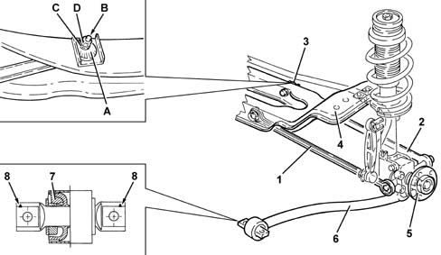

4420B rear suspension wishbones
- Path
- Descriptions > 44 SUSPENSION AND WHEELS > 4420 REAR SUSPENSION > 4420B rear suspension wishbones
- Kind
- system description
- Applies to
- engines: 1.6 TS, 2.0 TS; all production periods
- Interactive page
- https://sloeber94.github.io/elrnDB-a147/en/#/3022506
Applies to: engines: 1.6 TS, 2.0 TS; all production periods
SPECIFICATIONS:
VIEW OF ASSEMBLY

1 - Front transversal track control arm 2 - Rear transversal track control arm 3 - Adjustment device A - Cam B - Adjustment pin C - Spacer D, - Nut 4 - Crossmember 5 - Hub 6 - Longitudinal track control arm 7 - Hydraulic bush 8 - Arrows indication direction of assembly
The front and rear transversal track control arms on the rear suspension are made of high-tensile pressed steel plate.
On the rear arm, at the point of anchorage to the crossmember, there is a cam device for adjusting the toe-in which replaces the traditional worm and screw system. This weighs less and is easier to adjust.
The bushes anchoring the arms to the crossmember and hub have been designed to improve the dynamic isolation characteristics.
At the front attachment point of the longitudinal arm, there is a hydraulic bush which gradually absorbs stresses, to further improve suspension comfort.